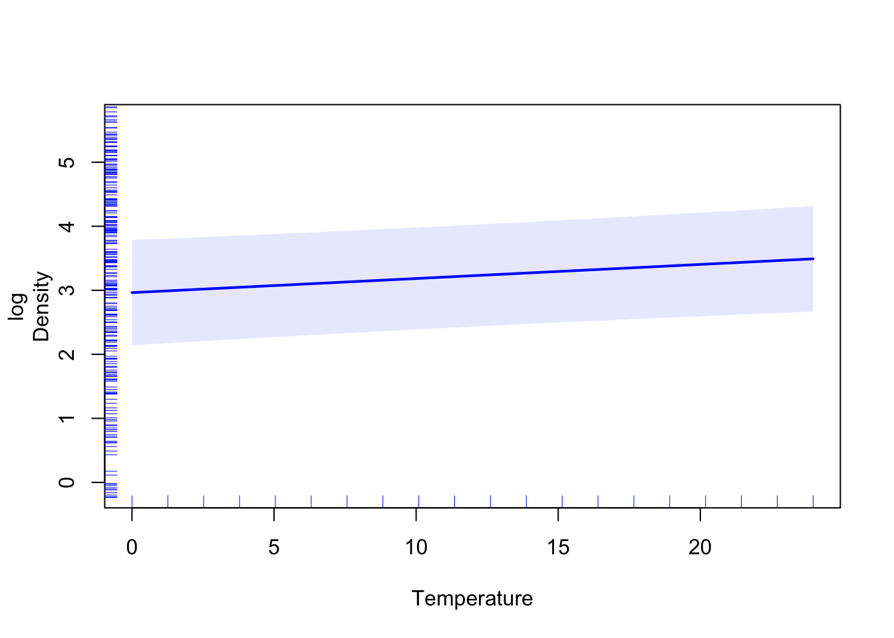
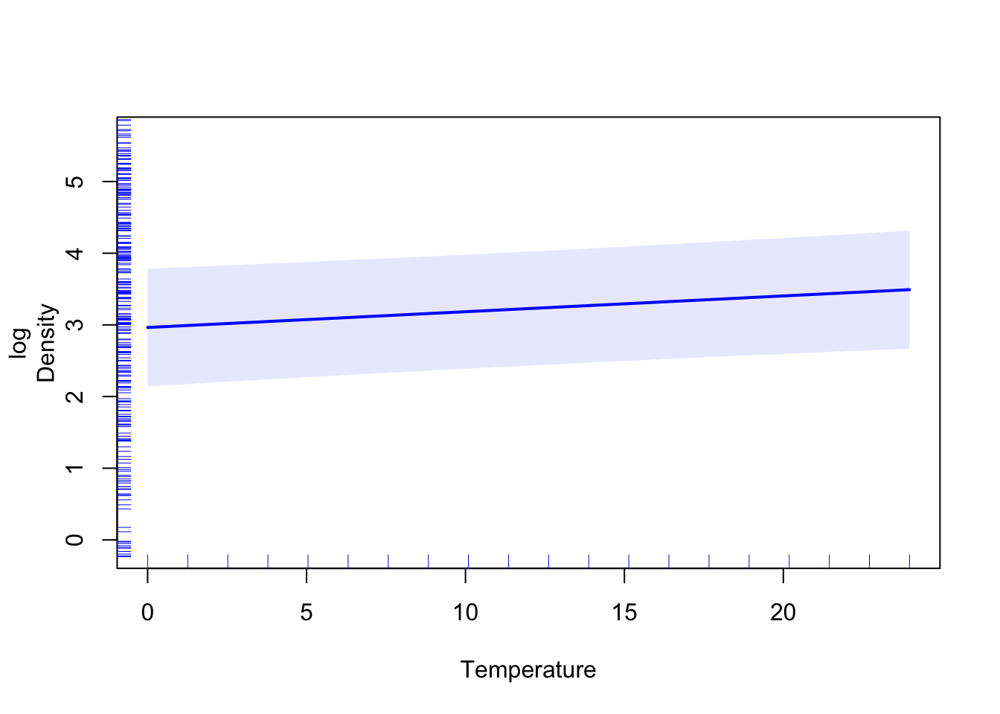
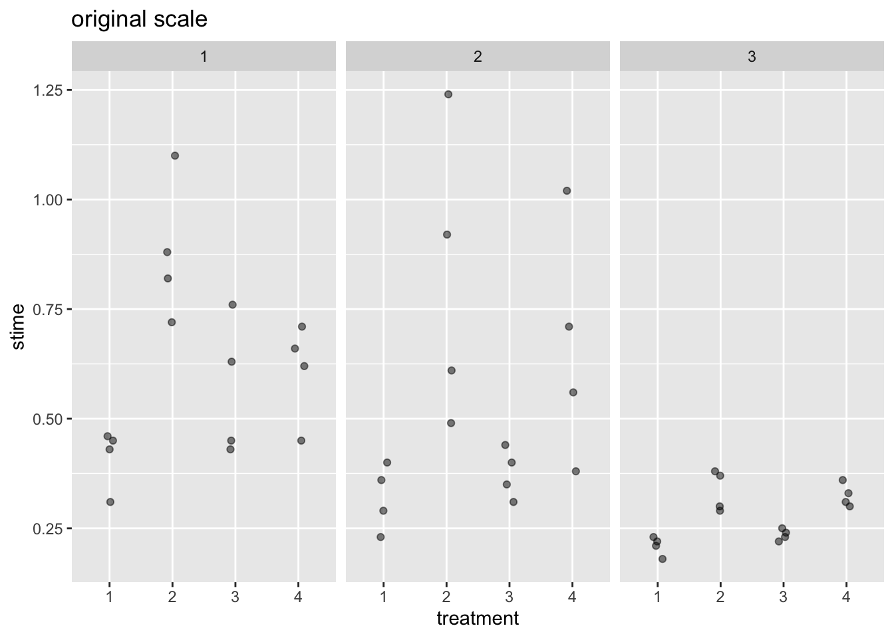
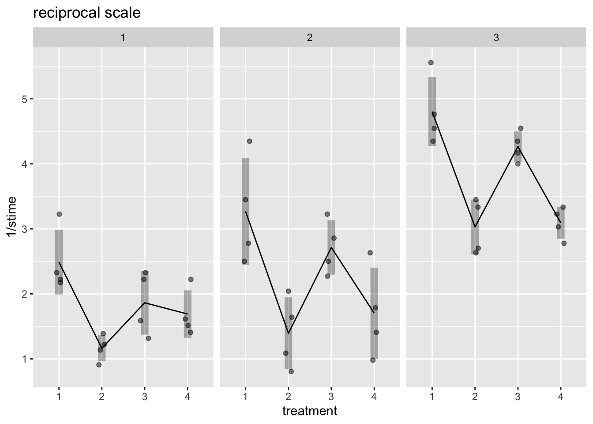

15 Experimental design revisited
In Chapter 1 we asked the question “Where do data come from?” and this led to some discussion on designing experiments. Now that we have seen some statistical modelling at work, it is worthwhile revisiting some of the issues of experimental design.
15.1 Power
One of the key questions when designing an experiment is how many samples we should have. As we have seen, more data gives more precision in estimating the things of interest to us. If we do not have enough samples we may have little chance of identifying effects of interest. If we collect more data than we really need then we are wasting resurces and, in medical settings, subjecting patients to treatements for which there is strong evidence already of inferiority, which would be unethical.
The hypothesis testing framework gives us a route to tackling this problem because we can consider the probability that the test produces a significant result for different values of the true parameter of interest. We can experiment with the rp.power function in the rpanel package for R, in order to explore some of these ideas. An illustrative screenshot is shown below. This considers the case where we simply have two populations to compare. We need to consider
- effect size: how far apart are the two means likely to be, or perhaps more importantly, how far apart do they need to be before the difference matters? (Effect size is some times measured as the difference in means divided by the population standard deviation.)
- standard deviation: what is the level of the variation present in each population, and can we assume that to be the same across the two populations?
- normality: is it reasonable to assume a normal distribution for each population?
After considering these issues, we can propose a particular sample size and then calculate the power (the probability that a two-sample t-test correctly detects the presence of the effect).
The comparison of two populations is a particularly simple one. What do we do if our experiment is more complex. There are books of power calculations for different situations but these can only extend so far. One useful strategy is to consider appropriate parameter settings (means, standard deviation, etc.), write some code in R to simulate data and then apply our planned method of analysis. We can simply count the proportion of cases where the analysis correctly identifies that the effect of interest is present. That computational route to an understanding of power is a very useful one.
15.2 Completely randomised design: comparing several treatments
If we wish to compare several groups, and there is no other obvious source of variation we need to account for, Then we can simply randomise the allocation of our experimental units to the groups. Here is a simple example.
Example: fat in doughnuts
During cooking, doughnuts absorb fat. An experimenter wished to learn the amount absorbed depends on the type of fat used. For each of four flats, six batches of doughnuts were prepared, a batch consisting of 24 doughnuts. The data recorded were the grams of fat absorbed per batch.This example is from the book Statistical Methods, by Snedecor and Cochran, 6th edition, 1967, Iowa State University Press.
In earlier work, we compared two means through confidence intervals and t-tests. When we need to compare several means simultaneously, a different approach is required. The plots below show the data. The left hand plot marks in the sample means for each group. The right-hand plot marks in the mean of the whole dataset.
absorption <- c(164, 172, 168, 177, 156, 195, 178, 191, 197, 182, 185, 177,
175, 193, 178, 171, 163, 176, 155, 166, 149, 164, 170, 168)
fat <- factor(rep(c("A", "B", "C", "D"), each = 6))
mn0 <- mean(absorption)
mn <- tapply(absorption, fat, mean)
library(ggplot2)
plt <- ggplot(mapping = aes(fat, absorption)) + geom_jitter(width = 0.1)
plt + geom_segment(aes(x = 1:4 - 0.4, xend = 1:4 + 0.4, y = mn, yend = mn, col = I("red"))) +
ggtitle("Different means")
plt + geom_segment(aes(x = 1:4 - 0.4, xend = 1:4 + 0.4, y = mn0, yend = mn0, col = I("red"))) +
ggtitle("Common mean") 

The idea of analysis of variance is to partition the variation we see into different sources. If we measure the variation of the data around the common mean, in the right-hand picture, this value will be relatively large. The variation of the data around the group means, in the left-hand picture, is necessarily smaller. Analysis of variance was briefly discussed in the context of linear models. The idea is exactly the same here – indeed, this is a linear model as we saw earlier that factors can be represented in the new model is very easily. So we have two competing models – one which assumes a common mean and another which allows the means to be different for each group. In each case the residual sums-of-squares quantifies how well the model fits the data. The test proceeds by comparing these two residual sums-of-squares in an F-statistic. As usual, R can do the work for us. Although there are specialist functions for analysis variance, we will simply use again the lm function.
## Analysis of Variance Table
##
## Response: absorption
## Df Sum Sq Mean Sq F value Pr(>F)
## fat 3 1636.5 545.5 5.4063 0.006876 **
## Residuals 20 2018.0 100.9
## ---
## Signif. codes: 0 '***' 0.001 '**' 0.01 '*' 0.05 '.' 0.1 ' ' 1## Estimate Std. Error t value Pr(>|t|)
## (Intercept) 172 4.100813 41.9429033 5.705111e-21
## fatB 13 5.799425 2.2416014 3.648826e-02
## fatC 4 5.799425 0.6897235 4.982936e-01
## fatD -10 5.799425 -1.7243088 1.000753e-01The evidence here, expressed in the very small p value of 0.007, points strongly towards the existence of differences among the four fats, as the model which assumes a common mean is clearly inconsistent with what we see in the data.
15.3 Randomised blocks: the parable of the sower
Sometimes we are aware of factors which will affect the measurements we take, but which are not the primary focus of the experiment. These are called blocks. We might regard these as ‘nuisance’ factors, but ignoring them would be a mistake. We should build a model which accounts for these factors rather than allowing them simply to blur the effects of interest to us.
_________________________________________________
Example: the parable of the sower
The sketch below shows a field and its key environmental characteristics. (I am am not known for my artistic skills!) The brown marks inside the field indicate stony ground and the blue marks at the edge of the field indicate a stream. The other graphics should be obvious. If we are to design an experiment to compare the yield of several variety of barley, how should we decide where each crop should be sown?
_________________________________________________
Consider how you would allocate the different varieties of barley to the field.
15.4 Factorial designs: poisons and treatments
We are often in the situation where we wish to look at the effects of more than one factor simultaneously. A powerful design for this considers every possible combination of the two factors, ideally with replicates at each combination. This allows us to investigate the effects of each factor and also the possibility of interaction, where the effect of one factor depends on the setting of the other.
Example: poisons and treatments
A famous dataset on poisons and antidotes records the survival times (in units of 10 hours) of animals in a \(3 \times 4\) factorial experiment. Four animals were allocated to each combination of three poisons and four treatments, using a randomisation procedure. The data are available in the filepoisonsdataframe, available in therpanelpackage.What conclusions would you draw about the effects of the poisons and the treatments?
Code to read the data is shown below. The dataset is available in rpanel.
library(rpanel)
poisons$poison <- factor(poisons$poison)
poisons$treatment <- factor(poisons$treatment)Some simple boxplots provide a good initial visualisation. An immediate troubling issue os that the standard deviations of the groups are rather different. A linear model seeks to make the assumption that the standard deviation of the errors is the same everywhere. Is there a transformation which might make this assumption more reasonable?
library(tidyverse)
ggplot(poisons, aes(treatment, stime)) +
geom_jitter(width = 0.1, height = 0, alpha = 0.5) +
facet_wrap(vars(poison)) + ggtitle("original scale")
mns <- poisons %>%
group_by(poison, treatment) %>%
summarise(mn = mean(stime),
se = (sd(stime) / sqrt(length(stime))))
ggplot(poisons, aes(treatment, stime)) +
geom_jitter(width = 0.1, height = 0, alpha = 0.5) +
geom_line(aes(x = treatment, y = mn, group = poison), data = mns) +
geom_linerange(aes(x = treatment, y = mn,
ymin = mn - 2 * se,
ymax = mn + 2 * se),
linewidth = 3, alpha = 0.3, data = mns) +
facet_wrap(vars(poison)) + ggtitle("original scale")
model0 <- lm(stime ~ treatment * poison, data = poisons)
library(MASS)
boxcox(model0, seq(-2, 0.5, 0.1))
mns <- poisons %>%
group_by(poison, treatment) %>%
summarise(mn = mean(1/stime),
se = (sd(1/stime) / sqrt(length(1/stime))))
ggplot(poisons, aes(treatment, 1/stime)) +
geom_jitter(width = 0.1, height = 0, alpha = 0.5) +
geom_line(aes(x = treatment, y = mn, group = poison), data = mns) +
geom_linerange(aes(x = treatment, y = mn, ymin = mn - 2 * se, ymax = mn + 2 * se),
linewidth = 3, alpha = 0.3, data = mns) +
facet_wrap(vars(poison)) + ggtitle("reciprocal scale")
There are ways of identifying suitable transformation more systematically. One is the Box-Cox transformation which considers power transformations (which, when suitably normalised, contain the log transformation as a special case). The statistical principle of likelihood can be used to evaluate different powers. The example below uses the boxcox function in the MASS package to show that the reciprocal (lambda = -1) transformation is a good choice for the poisons data. Why should this be? As the response variable `stime’ is a survival time, its reciprocal could be considered ‘speed of death’. It is always helpful to have an interpretation of a transformation.
A linear model can now be fitted. It is wise to include and examine possible interactions. An anlysis of variance table is a good way of assessing the evidence and this suggests that a model without interaction is justifiable. If evidence of interaction is present then the main effects of the factors do not have a simple interpretation. As the results below show, there is no evidence of interaction in this example, so we have a clear interpretation of the effects of the two factors. These are quantified in the model without an interaction term present, where the terms refer to the effect of each factor level compared to the first factor level.
## Analysis of Variance Table
##
## Response: 1/stime
## Df Sum Sq Mean Sq F value Pr(>F)
## treatment 3 20.414 6.8048 28.3431 1.376e-09 ***
## poison 2 34.877 17.4386 72.6347 2.310e-13 ***
## treatment:poison 6 1.571 0.2618 1.0904 0.3867
## Residuals 36 8.643 0.2401
## ---
## Signif. codes: 0 '***' 0.001 '**' 0.01 '*' 0.05 '.' 0.1 ' ' 1## Estimate Std. Error t value Pr(>|t|)
## (Intercept) 2.6976566 0.1743513 15.472534 5.936991e-19
## treatment2 -1.6574024 0.2013236 -8.232531 2.655965e-10
## treatment3 -0.5721354 0.2013236 -2.841870 6.892762e-03
## treatment4 -1.3583383 0.2013236 -6.747041 3.347340e-08
## poison2 0.4686413 0.1743513 2.687914 1.026221e-02
## poison3 1.9964249 0.1743513 11.450587 1.690903e-1415.5 Principles of experimental design
In an ideal world experimental design would be relatively straight forward. Variation would not be a problem and we could just design experiments on the basis that if we did the same thing twice, the results would be identical. We could do the experiment on all the material (or at any rate the result would be the same no matter which individuals/piece of tissue/cell culture was used). We would be in control of all the factors which affect the outcome. But if that were the case, we would already know the answer!
The main problems are:
- variation;
- not knowing what will affect the outcome;
- variation;
- we can’t do the experiment on the entire population of possible material;
- variation.
Here are three key concepts that may help in focusing our thinking about designing experiments.
- Control
This means more than ensuring we have a relevant control group against which to compare ‘treatment’ groups. It also refers to the careful choice of settings for the factors whose effects we would like to assess. It is also important to recognise those factors we can’t completely control but which we know will have an effect on what we measure. The discussion of blocks below is one example of this. - Replicate
The more data we have, the more precise our estimates will be. However, there also needs to be a realistic balance between the information gained from the experiment against the resource available to collect the data. As noted above, ethical issues can also arise. - Randomise
This is a very good way of avoiding the biases which can arise if we make our own decisions on how to allocate ‘treatments’ to experimental units.
15.5.1 Control
15.5.1.1 Holding Factors Constant
The classical approach to controlling factors which you know about is to experiment with one factor whilst at the same time holding all the others constant. This is often referred to as ‘One Factor at a Time’ experimentation. It works well for simple experimental situations, but can give a misleading picture in more complex situations, for example when there are interactions between the factors which we are examining. There are many instances in the literature of a number of subjects where one group of researchers have found one result for a particular factor and a second group have found a very different result. This apparent paradox may be explained by the fact that one or more of the factors being held constant by both groups is being held constant at a different level (pH, temperature, Na+, concn, etc.). There are thus inherent dangers in one factor at a time experimentation, which an experimenter must be aware of.
15.5.1.2 More Complex Designs
Traditionally the approach to dealing with multiple interacting factors has been the Factorial Experiment, but with three or more factors, this can require very large numbers of experimental units. There are alternatives to the factorial experiment, which make quite reasonable assumptions and which can reduce significantly the number of experimental units required. Such techniques can be very powerful, but should be used with care under the guidance of someone who is aware of the assumptions and what they mean in practice.
15.5.1.3 Blocks
The second way to control factors which you know about is to divide the experimental material into sub-parts where each sub-part consists of material which is very similar. Cell material may be divided into sub-parts:- small, medium and large cells; people into:- male and female or underweight, normal and overweight; and so on. These sub-parts are referred to as Blocks. Within blocks, the variation is much reduced over that to be found in the material as a whole and it thus obscures the differences due to treatments rather less than would otherwise be the case. In general terms, the whole experiment is conducted in each block and the results from the different blocks are essentially pooled. Blocking makes for much more efficient experimentation.
Suppose for example that to do all the assays required within a experiment, you will have to use more than one batch of reagents. There is a possibility that the different batches will be slightly different in some respect. This difference could affect the outcome of the assays conducted using the two batches. It would therefore be better to conduct the whole experiment (perhaps with no replication) using a single batch and to then do it a second time using another batch, to get the replication, rather than doing half the treatments with one batch and the other half with a second (possibly slightly different) batch. Similarly if you can’t fit all your vessels in one water bath, it would be better to have one from each treatment in one water bath rather than all of one treatment in one water bath and all of the other treatment in another water bath, unless of course the temperature of the water bath is the experimental treatment.
15.5.2 Replicate
Given that there is variation in measurements taken under seemingly ‘identical’ conditions, even after taking precautions as outlined in the previous section, then the best that we can do is to measure as accurately as possible how big that variation is. Armed with a reasonable estimate of the variation, you will be able to see if the treatment effects are larger than the ‘background’ variation. Unfortunately the larger the variation, the larger the number of replicates of each treatment you will need to:
- estimate the background variation accurately;
- see the treatment effects distinctly through the background variation.
You can usually get an estimate of the likely variation for a particular experiment from published work or previous experiments which you or your colleagues have carried out. From that and a knowledge of the approximate size of the expected treatment effects, you can calculate the number of replicates which will be required to give you a reasonable chance of detecting the treatment effects given the background variation. More experiments produce inconclusive results because of inadequate replication than any other cause.
Again there are statistical techniques which can reduce replication by concentrating it all in one part of the experimental design, but these techniques should be used with caution, under the guidance of someone who is fully aware of the assumptions and what they mean in practice.
15.5.3 Randomise
Having dealt with the causes of variation which we know about, we must ensure that those causes that we don’t know about are evenly distributed over the treatments so as not to introduce bias into the experiment. This sounds like an impossible task since, by definition, we do not know what these causes are. Luckily there is a very powerful statistical technique which comes to our rescue - randomisation.
The principle is simple - ensure that each piece of experimental material has an equal chance of being assigned to each treatment. That way it is very unlikely that all the healthy material will be assigned to one treatment and all the unhealthy material to another. They should get approximately equal shares of each. In practice you have to use some external mechanism to generate a random sequence, as human attempts to be random are usually very systematic.
Randomisation should avoid the introduction of any selection bias. Techniques for randomisation include the use of random number tables, but will require that a complete list of the pieces of experimental material can be enumerated. Randomisation should mean that having accounted for the factors you know (which you were able to control), then those that you do not know will be prevented from interfering with the experiment. Circumstances may arise where it is not possible to use randomisation over some factors, under these circumstances, the only solution is to measure and use that variable or factor as a covariate.
15.5.4 Replication and Pseudo-Replication
Consider an experiment where each treatment is replicated three times. This provides a means of dealing with the inherent variation in the results obtained, even if we have carried out identical manipulations, using the same batches of materials. The three replicates give us a measure of how variable the process is. However, if the process is very variable it may be difficult to distinguish between the treatments.
In some settings, when we record the value from each replicate we may be able to do this multiple times. If we can, why not do this three times for each replicate. This will give us a replication of nine rather than three for very little extra effort. Unfortunately this is not true replication.
Most experimental methods involve a number of steps, illustrated here in the context of an experiment requiring the preparation of cellular suspecsions:
- collect material;
- prepare cellular suspension;
- subject cellular suspension to one of a number of treatments;
- extract an indicator component as a surrogate for treatment success;
- assay indicator component.
Each of these steps may be replicated a variable number of times. Replication applied early in the process will lead to extra replication of later steps and it is thus tempting to replicate later steps more than earlier ones. In each case however the replication measures something different.
- Collect material Here the replication measures the variation in collection or the variation between plants, animals, etc. This helps you to see how well the results will apply to other individuals. This is all about variation in the source material. Increase in the number of individuals to measure obviously increases the cost and it is usual to try to keep this to a minimum. However, if several individuals are not independently subjected to the same ‘treatment’ or environmental influence, there is no true replication in the study and the remainder of the steps are measuring within individual variability, in the absence of any indication of between individual variability.
- Prepare cellular suspension Here the replication measures the variability in the preparation of the suspension. This may be due to different people carrying out the preparation, use of different apparatus, different reagent stocks, temperature, etc. This helps you to see how different the results are likely to be for multiple preparations. This is all about variation in technique. This measures the variability within the preparation and there will obviously be a need for more replication at this level if the preparation is very heterogeneous.
- Apply treatment This is the replication of the treatment and measures how different applications of the same treatment are and enables us to assess whether the differences due to treatment are larger than the differences that we see between replications of the same treatment. This is what the experiment is all about.
- Extract indicator Here the replication measures the variation in the extraction process, and will be due to similar reasons to those outlined under ‘Prepare cellular suspension’ above. This is again all about variation in technique.
- Assay indicator Here the replication measures the variation in the assay process, and will be due to similar reasons to those outlined above. This is again all about variation in technique.
Each of these sources of variation (and others) may be important in the overall conduct of the experiment; but they do measure different things. The importance of these components of variation depends on their relative size. Assessment of the relative size of components of variation is important in assessing the viability of sampling, preparation, extraction or assay procedures. In general terms, the variation due to these procedures should be less than that due to the treatment. If this is not true, it will not be possible to arrive at a justifiable conclusion.
The replication that we applied was at the ‘Apply treatment’ stage. The addition replication proposed is at the ‘Assay indicator’ stage and it contributes nothing to our estimation of the variation due to treatment and thus our ability to distinguish between the performance of the different types of bead.
When replication is carried out at an inappropriate stage, this is referred to as pseudo-replication. Pseudo-replication misleads you into attributing the wrong number of degrees of freedom to your treatment comparisons and thus to think that the inherent variation between replicates is smaller than it really is. This in turn can lead you to think that there are real differences between treatments when there are not. Most commonly pseudo-replication occurs by substituting extra replication at the final assay stage for replication at the treatment stage, as it is easier and requires less effort and resources. This phenomenon is to be found quite widely in experimental work and often finds its way into published papers.
The statistical significance of a particular treatment or phenomenon can only be determined relative to the variation that would be expected if the treatment or phenomenon did not apply. This means that a source of ‘error’ must be identified and measured which provides this comparison. A failure to do this will result in an experiment or study in which it is not possible to determine the statistical significance of what has been observed.
15.6 Exercises
15.6.1 Student cost of living
The University of Glasgow SRC would like information on the cost of living of full-time students enrolled at the University. Go through each of the terms defined in the notes above and consider what they are in this context, from element to sample statistic.
15.6.2 US presidential election 1936
The Literary Digest was a magazine which surveyed 10 million people, beginning with its own readers, who they planned to vote for in the 1936 US presidential election. A massive 2.4 million people responded, leading to the prediction of a clear win for the candidate Alf Landon. In fact, Franklin Delano Roosevelt had a landslide victory. What went wrong?
15.6.3 The parable of the sower
Revisit the notes on this example of a randomised block design and consider how you would allocate the different varieties of barley to the field.